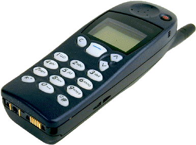

Nokia 5110
Описание товара:
Cотовый телефон фирмы Nokia который работает на 900MHz сетях GSM сетях.

Характеристики товара:
Основные:
- Вес:167 г
- Размеры (ШxВxТ):48x132x31 мм
- Тип экрана:монохромный
- Тип мелодий:обычные
- Число мелодий:30
- Виброзвонок:нет
Мультимедийные возможности:
- Игры:есть
- Стандарт:GSM 900
- Доступ в интернет:нет
- Тип аккумулятора:NiMH
Автономность:
- Емкость аккумулятора:450 мА·ч
- Емкость дополнительного аккумулятора:1500 мА·ч
- Время разговора:5 ч
- Время ожидания:270 ч
- Время заряда:2:00 ч:мин
- Режим разговора 45 ч
- Режим ожидания 270 ч
Подробное описание товара
Телефон Nokia 5110 позволяет вам оставаться самим собой. Он выполнит все ваши желания. Пошлите короткое
сообщение, сохраните имя и номер телефона, выберите новую мелодию звонка — и все при помощи одной-единственной
кнопки Nokia Navi.